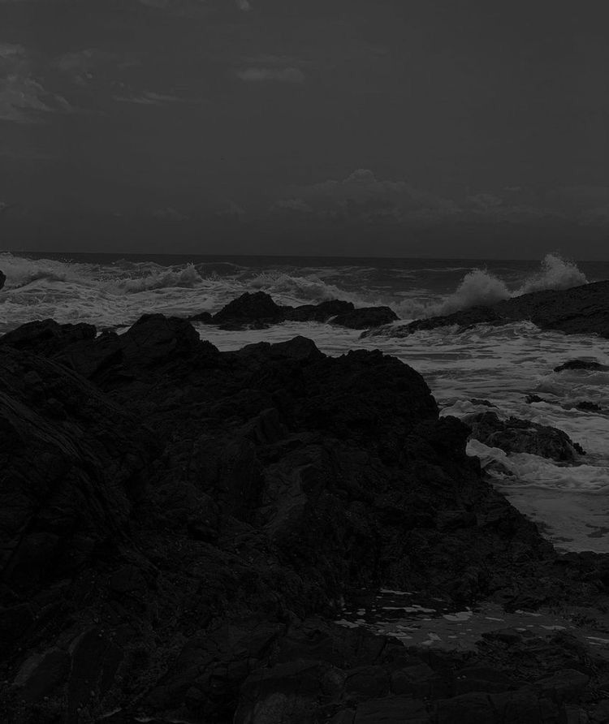
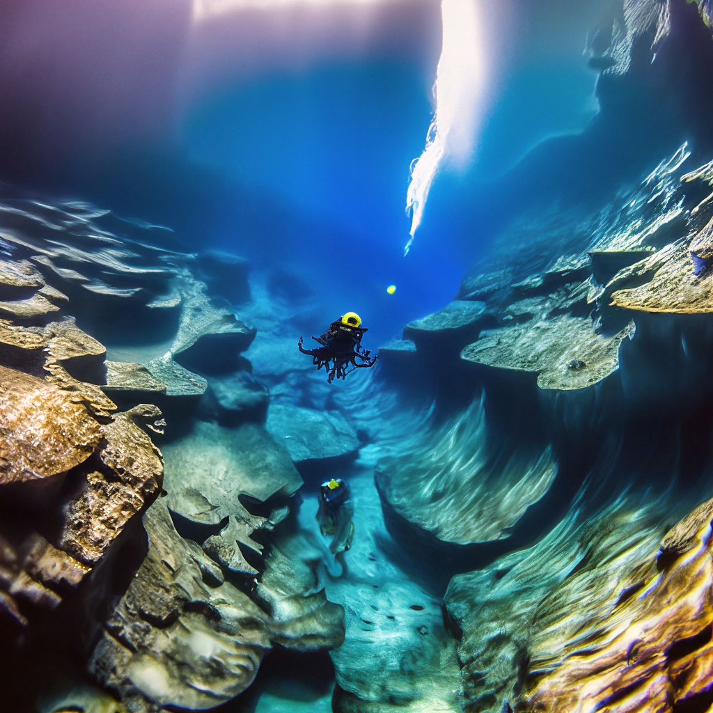
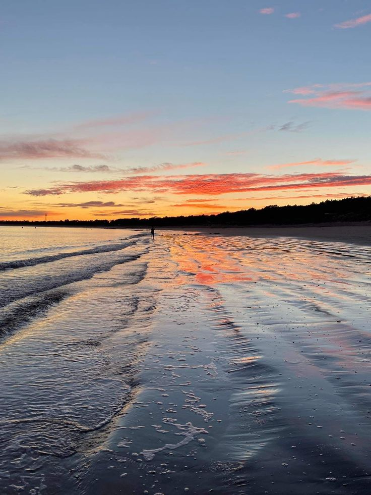
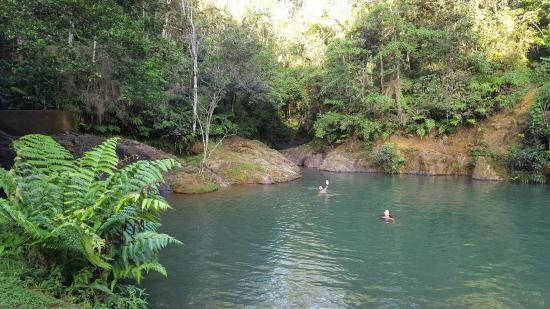
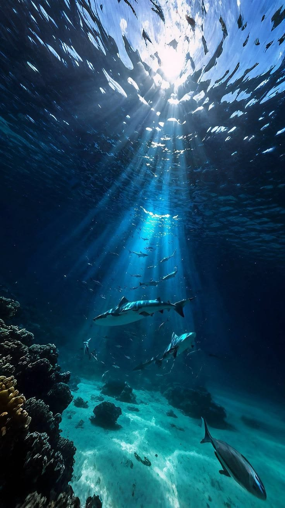
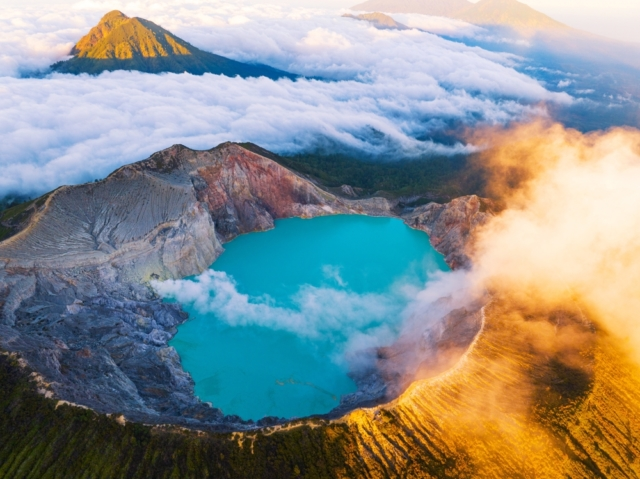
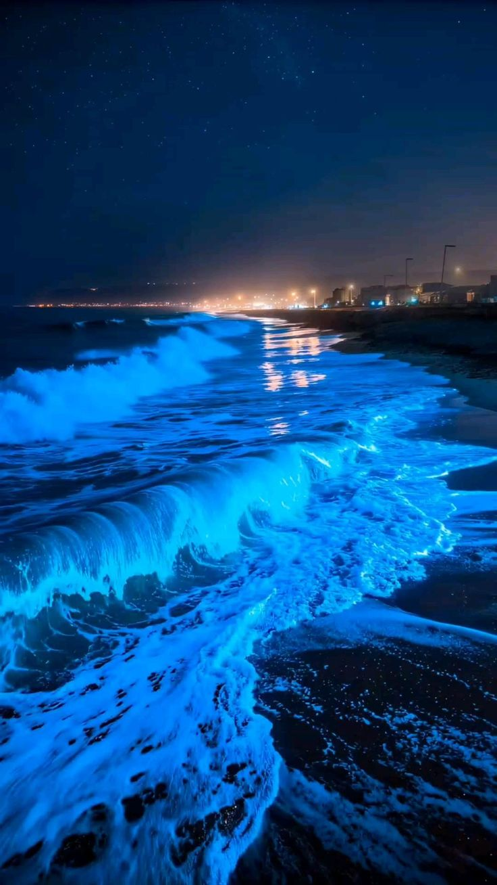
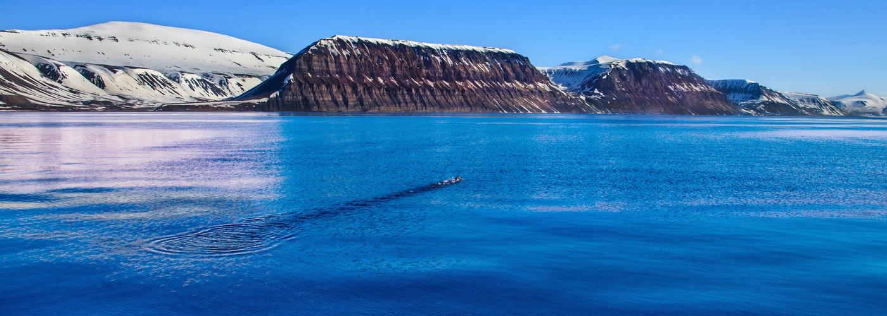

| Океан | Площадь (млн км²) | Объём (млн км³) | Средняя глубина (м) | Наибольшая глубина | Фото океана | Фото желоба |
|---|---|---|---|---|---|---|
| Тихий | 178,68 | 710,36 | 3976 | Марианский жёлоб, 11022 м |
 |
 |
| Атлантический | 91,66 | 329,66 | 3597 | Жёлоб Пуэрто-Рико, 8742 м |
 |
 |
| Индийский | 76,17 | 282,65 | 3711 | Яванская впадина, 7209 м |
 |
 |
| Северный Ледовитый | 14,75 | 18,07 | 1225 | Гренландское море, 5527 м |
 |
 |
| Характеристика | Значение |
|---|---|
| Общая площадь | 361,3 млн км² (71% поверхности Земли) |
| Общий объём воды | 1340,7 млн км³ |
| Средняя глубина | 3700 м |
| Максимальная глубина | 11022 м (Марианский жёлоб) |
| Средняя температура | 3,73°C |
| Средняя солёность | 34,72 ‰ (промилле) |
| Доля в гидросфере | 94,3% всей воды на планете |
| Общее количество солей | 49,2 × 10¹⁵ тонн |